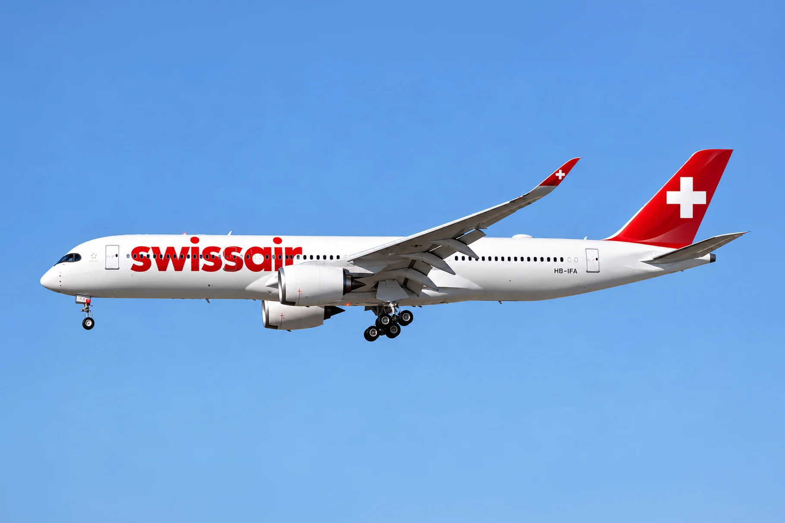

EUROPA
EUROPAKopenhagen
Kopenhagen, ganz entspannt.
Hafenluft, klare Linien und genug Zeit für einen Umweg. Eine Stadt, die nicht laut sein muss, um hängen zu bleiben.
MEHR ERFAHREN↗Vier wenig bekannte Orte, ehrliche Tipps und ein Abend ohne Sehenswürdigkeiten-Marathon. Entdecke Lissabon so, dass aus einem schönen Bild ein guter Plan wird.
Geschichte lesen
Drei weitere Reiseziele, drei neue Perspektiven.
EUROPAHafenluft, klare Linien und genug Zeit für einen Umweg. Eine Stadt, die nicht laut sein muss, um hängen zu bleiben.
MEHR ERFAHREN↗ EUROPA
EUROPAZwischen Wind, Weite und Nordlicht: Warum sich Island nicht nach einer Checkliste entdecken lässt.
MEHR ERFAHREN↗ NORDAMERIKA
NORDAMERIKAEinmal um die Ecke statt zum nächsten Pflichtfoto. Die Stadt hat auch zwischen den grossen Namen Geschichten.
MEHR ERFAHREN↗«Die wahre Reise besteht nicht darin, neue Landschaften zu entdecken, sondern mit anderen Augen zu sehen.»
MARCEL PROUST · LA PRISONNIÈRE · 1923
Der A350-900 bringt eine neue Generation des Langstreckenfliegens in die Flotte. Was verändert sich an Bord, was steckt hinter dem neuen Flugzeug – und was haben Reisende davon?
MEHR ERFAHREN↗